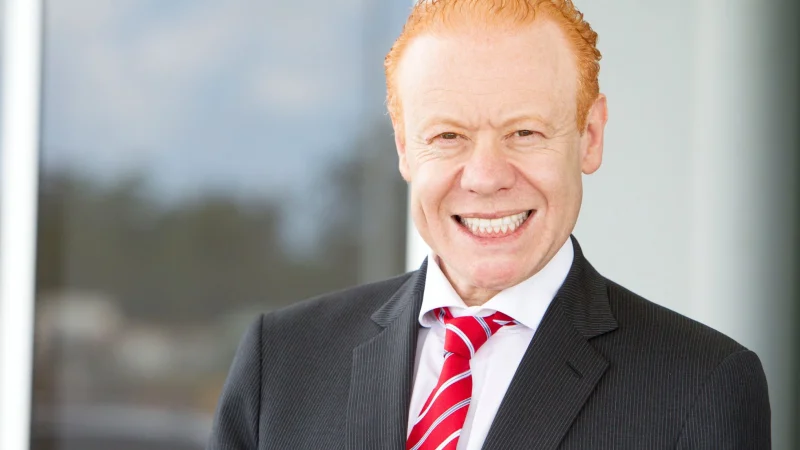

Anthony Joseph Pratt (born April 11, 1960), an Australian businessman and billionaire, is the Executive Chairman of Visy Industries and Pratt Industries United States, the world’s largest privately owned packaging and paper company. According to the 2016 BRW Rich 200, Pratt and his family have a net worth of A$10.35 billion; the second richest in Australia. Forbes assessed Pratt's net worth in 2016 at US$4.2 billion; listing his sisters' wealth independently.Pratt is the son of former manufacturing magnate and President of the Carlton Football Club Richard Pratt and his wife philanthropist Jeanne Pratt AC.
Early life and education
Pratt was born in Melbourne, Victoria to Richard Pratt (né Przecicki) and Jeanne Pratt AC, Polish-Jewish immigrants. He graduated from Monash University, Melbourne, with a Bachelor of Economics (Hons) in 1982.
Career
Pratt joined the management consulting firm of McKinsey & Co in 1982, before joining Visy as joint General Manager of its board. In 1988, he became Deputy Chairman of Visy Industries. Three years later, he moved to the United States to lead the company's expansion there. Over the next 15 years, Pratt Industries grew 15-fold in sales and earnings, through greenfield initiatives and the acquisition of several corrugated manufacturing companies that now form the heart of Pratt Industries. Company revenues grew from US$100 million in 1991; and by 2016 revenue was US$3 billion. During that same period, Pratt Industries grew from the 46th largest corrugated box producer in the U.S. to the 5th largest. It is the only major paper container board company that is 100 percent recycled. Pratt Industries employs more than 5,800 staff at its mills and box plants throughout the USA – more US citizens than any other Australian company. In 2016, Pratt was awarded the RISI North American Packaging CEO of the Year Award. That same year, Pratt opened a 100% recycled paper mill near Chicago, adding about US$1 billion to Pratt’s wealth. Also in 2016, Forbes ranked Pratt Industries #181 on its list of "America's Largest Private Companies." In addition, Pratt's Visy, which employs 5,500 people in Australia, was named Australia's largest private company by revenue.
Although Pratt remains Chairman of the American arm of the family’s packaging empire, he returned to Australia to take over as Executive Chairman of Visy following the death of his father, Richard, in 2009. Visy's corporate reputation index ranking went from #43 to #3 between 2009 and 2011.
Personal life
Pratt sits on the National Board of the Muhammad Ali Center in Louisville, Kentucky, and is also active in numerous charity organizations throughout Australia and the United States. In 1998, he arranged for Muhammad Ali to visit Australia for the Australian Football League grand final, as well as for a subsequent trip two years later. Pratt is a member of the Climate Group, an international environmental group founded by former British prime minister Tony Blair. He has been honoured for his efforts by Mikhail Gorbachev's Global Green USA and Ted Turner's Captain Planet Foundation. Pratt is a member of the United States Studies Centre at the University of Sydney.
In 2007, Pratt committed to former President Clinton’s Global Initiative to invest more than US$1 billion over the ensuing decade in recycling infrastructure and clean energy, citing recycling as an important but underestimated weapon in the fight against climate change, because landfills emit more greenhouse gases than all of global aviation. He fulfilled his pledge five years early. In 2009, Pratt was honored by the New York-based Foreign Policy Association, with its Corporate Social Responsibility Award.
Since taking over the company, Pratt has taken a strong interest in sustainable agriculture, food security, and water issues, stating frequently that his motivation is that 70% of his Australian customers are in the food and beverage sector.
In April 2013, Pratt gave the keynote address at the Global Food Forum, an international conference on food security, which he organized in partnership with The Australian newspaper. He said it was possible for Australia to quadruple its current food production, through greater support for farmers and food companies, and to eventually feed 200 million people. The conference attracted leading political, agribusiness, food-industry, and academic figures. In October 2016, Pratt officially sponsored The Wall Street Journal's launch of the inaugural U.S.-based Global Food Forum. In his opening remarks, Pratt called on food industry leaders to start a national conversation about how to double the size of the American food industry to US$1.8 trillion and thereby create millions of new jobs.
In September 2013, Pratt was elected an executive member of the Australia-Japan Business Cooperation Committee, a group dedicated for more than 50 years to strengthening ties between the two countries. In October 2013, Prime Minister Tony Abbott invited Pratt on an official visit to Indonesia – the first overseas trip by the incoming leader. Later that month Pratt announced that former advisor to President Obama and the outgoing US Ambassador to Australia Jeffrey Bleich would join the Pratt Group advisory board.
In 2013, Pratt was awarded an honorary PhD by Monash University, for an "outstanding career of achievement and service to philanthropy, business and commerce."
He is also a member of the Australian-American Leadership Dialogue, which seeks to strengthen and deepen the ties between Australian and American leaders.
Pratt and his family split time between New York and Melbourne.